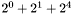
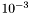
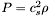
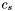
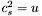
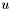
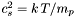
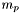

A number of features of GADGET-2 are controlled with compile-time options in the makefile rather than by the parameterfile. This has been done in order to allow the generation of highly optimised binaries by the compiler, even when the underlying source code allows for many different ways to run the code.
The makefile contains a dummy list of all available compile-time options, with most of them commented out by default. To activate a certain feature, the corresponding parameter should be commented in, and given the desired value, where appropriate. Below, a brief guide to these options is included.
Important Note: Whenever one of the compile-time options described below is modified, a full recompilation of the code may be necessary. To guarantee that this is done when a simple make is specified, all source files have been specified in the Makefile as being dependent on the Makefile itself. Alternatively, one can also issue the command make clean, which will erase all object files, followed by make.
Note that the above technique has the disadvantage that different simulations may require different binaries of GADGET-2. If several simulations are run concurrently, there is hence the danger that a simulation is started/resumed with the `wrong' binary. Note that while GADGET-2 checks the plausibility of some of the most important code options, this is not done for all of them. To minimise the risk of using the wrong executable for a simulation, it is recommended to produce a separate executable for each simulation that is run. For example, a good strategy is to make a copy of the whole code together with its makefile in the output directory of each simulation run, and then to use this copy to compile the code and to run the simulation.
- PERIODIC
Set this if you want to have periodic boundary conditions.
- UNEQUALSOFTENINGS
Set this if you use particles with different gravitational softening lengths.
- PEANOHILBERT
This is a tuning option. When set, the code will bring the particles into Peano-Hilbert order after each domain decomposition. This improves cache utilisation and performance.
- WALLCLOCK
If set, a wallclock timer is used by the code to measure internal time consumption (see cpu-log file). Otherwise, a timer that measures consumed processor ticks is used.
- PMGRID=128
This enables the TreePM method, i.e. the long-range force is computed with a PM-algorithm, and the short range force with the tree. The parameter has to be set to the size of the mesh that should be used, e.g.~64, 96, 128, etc. The mesh dimensions need not necessarily be a power of two, but the FFT is fastest for such a choice. Note: If the simulation is not in a periodic box, then a FFT method for vacuum boundaries is employed, using a mesh with dimension twice that specified by PMGRID.
- PLACEHIGHRESREGION=1+8
If this option is set (will only work together with PMGRID), then the long range force is computed in two stages: One Fourier-grid is used to cover the whole simulation volume, allowing the computation of the large-scale force. A second Fourier mesh is placed on the region occupied by `high-resolution' particles, allowing the computation of an intermediate-scale force. Finally, the force on very small scales is computed by the tree. This procedure can be useful for `zoom-simulations', where the majority of particles (the high-res particles) are occupying only a small fraction of the volume. To activate this option, the parameter needs to be set to an integer that encodes the particle types that make up the high-res particles in the form of a bit mask. For example, if types 0, 1, and 4 are the high-res particles, then the parameter should be set to PLACEHIGHRESREGION=1+2+16, i.e. to the sum . The spatial region covered by the high-res grid is determined automatically from the initial conditions. Note: If a periodic box is used, the high-res zone is not allowed to intersect the box boundaries.
- ENLARGEREGION=1.1
The spatial region covered by the high-res zone normally has a fixed size during the simulation, which initially is set to the smallest region that encompasses all high-res particles. Normally, the simulation will be interrupted if high-res particles leave this region in the course of the run. However, by setting this parameter to a value larger than one, the high-res region can be expanded on the fly. For example, setting it to 1.4 will enlarge its side-length by 40% in such an event (it remains centred on the high-res particles). Hence, with such a setting, the high-res region may expand or move by a limited amount. If in addition SYNCHRONIZATION is activated, then the code will be able to continue even if high-res particles leave the initial high-res grid. In this case, the code will update the size and position of the grid that is placed onto the high-resolution region automatically. To prevent that this potentially happens every single PM step, one should nevertheless assign a value slightly larger than 1 to ENLARGEREGION.
- ASMTH=1.25
This can be used to override the value assumed for the scale that defines the long-range/short-range force-split in the TreePM algorithm. The default value is 1.25, in mesh-cells.
- RCUT=4.5
This can be used to override the maximum radius in which the short-range tree-force is evaluated (in case the TreePM algorithm is used). The default value is 4.5, given in mesh-cells.
- DOUBLEPRECISION
This makes the code store and compute internal particle data in double precision. Note that output files are nevertheless written by converting the values that are saved to single precision.
- DOUBLEPRECISION_FFTW
If this is set, the code will use the double-precision version of FTTW, provided the latter has been explicitly installed with a "d" prefix, and NOTYPEPREFIX_FFTW is not set. Otherwise the single precision version ("s" prefix) is used.
- SYNCHRONIZATION
When this is set, particles may only increase their timestep if the new timestep will put them into synchronisation with the higher time level. This typically means that only on half of the timesteps of a particle an increase of its step may occur. Especially for TreePM runs, it is usually advisable to set this option.
- FLEXSTEPS
This is an alternative to SYNCHRONIZATION. Particle timesteps are here allowed to be integer multiples of the minimum timestep that occurs among the particles, which in turn is rounded down to the nearest power-of-two devision of the total simulated timespan. This option distributes particles more evenly over individual system timesteps, particularly once a simulation has run for a while, and may then result in a reduction of work-load imbalance losses.
- PSEUDOSYMMETRIC
When this option is set, the code will try to `anticipate' timestep changes by extrapolating the change of the acceleration into the future. This in general improves the long-term integration behaviour of periodic orbits, because then the adaptive integration becomes more akin to a strictly time reversible integrator. Note: This option has no effect if FLEXSTEPS is set.
- NOSTOP_WHEN_BELOW_MINTIMESTEP
If this is activated, the code will not terminate when the timestep falls below the value of MinSizeTimestep specified in the parameterfile. This is useful for runs where one wants to enforce a constant timestep for all particles. This can be done by activating this option, and by setting MinSizeTimestep and MaxSizeTimestep to an equal value.
- NOPMSTEPADJUSTMENT
When this is set, the long-range timestep for the PM force computation is always determined by MaxSizeTimeStep. Otherwise, it is set to the minimum of MaxSizeTimeStep and the timestep obtained for the maximum long-range force with an effective softening scale equal to the PM smoothing-scale.
- HAVE_HDF5
If this is set, the code will be compiled with support for input and output in the HDF5 format. You need to have the HDF5 libraries and headers installed on your computer for this option to work. The HDF5 format can then be selected as format "3" in Gadget's parameterfile.
- OUTPUTPOTENTIAL
This will force the code to compute gravitational potentials for all particles each time a snapshot file is generated. These values are then included in the snapshot files. Note that the computation of the values of the potential costs additional time.
- OUTPUTACCELERATION
This will include the physical acceleration of each particle in snapshot files.
- OUTPUTCHANGEOFENTROPY
This will include the rate of change of entropy of gas particles in snapshot files.
- OUTPUTTIMESTEP
This will include the timesteps actually taken by each particle in the snapshot files.
- NOGRAVITY
This switches off gravity. Makes only sense for pure SPH simulations in non-expanding space.
- NOTREERND
If this is not set, the tree construction will succeed even when there are a few particles at identical locations. This is done by `rerouting' particles once the node-size has fallen below  of the softening length. When this option is activated, this will be suppressed and the tree construction will always fail if there are particles at extremely close or identical coordinates.
- NOTYPEPREFIX_FFTW
If this is set, the fftw-header/libraries are accessed without type prefix (adopting whatever was chosen as default at compile-time of fftw). Otherwise, the type prefix 'd' for double-precision is used.
- LONG_X/Y/Z
These options can be used together with PERIODIC and NOGRAVITY only. When set, the options define numerical factors that can be used to distort the periodic simulation cube into a parallelepiped of arbitrary aspect ratio. This can be useful for idealized SPH tests.
- TWODIMS
This effectively switches of one dimension in SPH, i.e. the code follows only 2d hydrodynamics in the xy-, yz-, or xz-plane. This only works with NOGRAVITY, and if all coordinates of the third axis are exactly equal. Can be useful for idealized SPH tests.
- SPH_BND_PARTICLES
If this is set, particles with a particle-ID equal to zero do not receive any SPH acceleration. This can be useful for idealized SPH tests, where these particles represent fixed "walls".
- NOVISCOSITYLIMITER
If this is set, there is no explicit upper limit on the viscosity. In the default version, this limiter will try to protect against possible particle `reflections', which could in principle occur if very poor timestepping is used in the presence of strong shocks.
- COMPUTE_POTENTIAL_ENERGY
When this option is set, the code will compute the gravitational potential energy each time a global statistics is computed. This can be useful for testing global energy conservation.
- ISOTHERM_EQS
This special option makes the gas behave like an isothermal gas with equation of state . The sound-speed  is set by the thermal energy per unit mass in the intial conditions, i.e. . If the value for  is zero, then the initial gas temperature in the parameter file is used to define the sound speed according to  , where  is the proton mass.
- ADAPTIVE_GRAVSOFT_FORGAS
When this option is set, the gravitational softening lengths used for gas particles is tied to their SPH smoothing length. This can be useful for dissipative collapse simulations. The option requires the setting of UNEQUALSOFTENINGS.
- SELECTIVE_NO_GRAVITY
This can be used for special computations where one wants to exclude certain particle types from receiving gravitational forces. The particle types that are excluded in this fashion are specified by a bit mask, in the same as for the PLACEHIGHRESREGION option.
- LONGIDS
If this is set, the code assumes that particle-IDs are stored as 64-bit long integers. This is only really needed if you want to go beyond ~2 billion particles.
- FORCETEST=0.01
This can be set to check the force accuracy of the code, and is only included as a debugging option. The option needs to be set to a number between 0 and 1 (e.g. 0.01), which specifies the fraction of randomly chosen particles for which at each timestep forces by direct summation are computed. The normal tree-forces and the `correct' direct summation forces are then collected in a file forcetest.txt for later inspection. Note that the simulation itself is unaffected by this option, but it will of course run much(!) slower, particularly if FORCETEST*NumPart*NumPart>>NumPart Note: Particle IDs must be set to numbers >=1 for this option to work.
- MAKEGLASS=262144
This option can be used to generate a glass-like particle configuration. The value assigned gives the particle load, which is initially generated as a Poisson sample and then evolved towards a glass with the sign of gravity reversed
Generated on Sat Apr 22 15:29:43 2006 for GADGET-2 by
 1.3.9.1
1.3.9.1